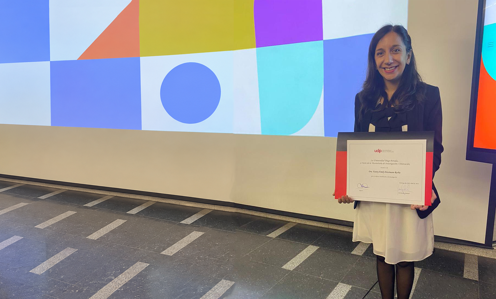

2024 & 2025
Top 2% Most-Cited Scientists
Stanford University / Elsevier
Included in the worldwide ranking of highly cited scientists.
Recognising scientific contributions and sharing research beyond academia.
Explore Fanny's scientific and institutional recognition, publication distinctions, academic scholarships, and media appearances highlighting her research in public health and epidemiology.

Stanford University / Elsevier
2024 · 2025
Awards & Distinctions
Scholarships & Early Recognition
Selected Media Appearances
Acknowledgements for contributions to science, research and academic leadership.
Stanford University / Elsevier
Included in the worldwide ranking of highly cited scientists.
Diego Portales University
Institutional recognition for contributions to research, development and innovation.
Chile
Ranked among the top 100 researchers in Chile in 2025.
Scientific, institutional and publication recognitions.
AD Scientific Index
Stanford University / Elsevier
Stanford University / Elsevier
Diego Portales University
Journal of Cachexia, Sarcopenia and Muscle
Maturitas
European Heart Journal
Maturitas
Support for academic development and international research experience.
11th Hydration for Health Scientific Conference
CONICYT · Doctoral scholarship
Nutrition and Dietetics · University of Concepción
Selected news and interviews featuring Fanny’s research and expert commentary.
Fanny Petermann-Rocha is interviewed as one of five national experts and discusses the new clinical guideline on obesity.
Interview in El Mercurio with scientific analysis of medication and public health.
News report warning of rebound effects and muscle loss associated with Ozempic use.
Science coverage of a study evaluating the impact of semaglutide use on cardiovascular prevention.
National press article highlighting risks associated with unsupervised semaglutide use.
Radio interview about the UDP study and projections for Ozempic use.
Expert interviews on the role of food warning labels in obesity.
El Mercurio report available through Litoralpress, featuring Fanny Petermann-Rocha on the new law increasing physical activity at school and the need to improve nutrition and healthy habits.
For interview requests, expert commentary or further information
about Fanny’s research, please get in touch.